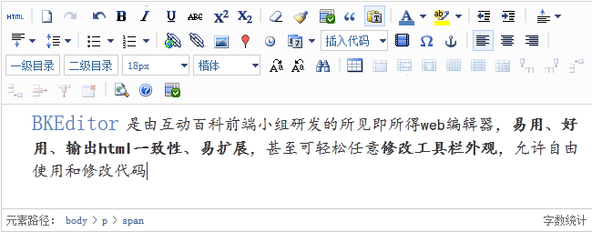

Introduction
异步加载 所有功能插件均可以异步加载（或延时加载） |
工具条外观易修改 工具条使用html编写，可以任意重构，发布前进行编译生成json文件 |
标签SEO 编辑器编辑出的html代码标签嵌套规则，使用strong，em等标签使生成内容更有利于seo |
使用简单 支持不写js，使用class类产生编辑器，使用data-XXX属性配置 |
浏览器一致性 在各个浏览器中产生的html代码几乎一样 |
功能全面 目标是做web编辑器中的word |
用户体验 目标是尽量向word的用户习惯和体验靠拢 |
错误记录 提供上传错误记录，方便后期维护，发现问题及时更新 |
Getting start
配置好你的路径，引入必要的js文件（jQuery， artDialog， bkeditor）
然后在页面中添加以下代码，就是这么简单！
<textarea id="editor" name="editor" class="bkeditor" data-toolbar="default" style="width:800px;height:200px;"> Getting start </textarea>
更多使用方法 -- 请点这里